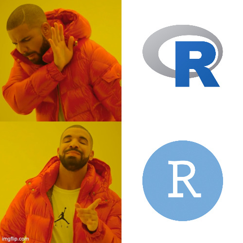
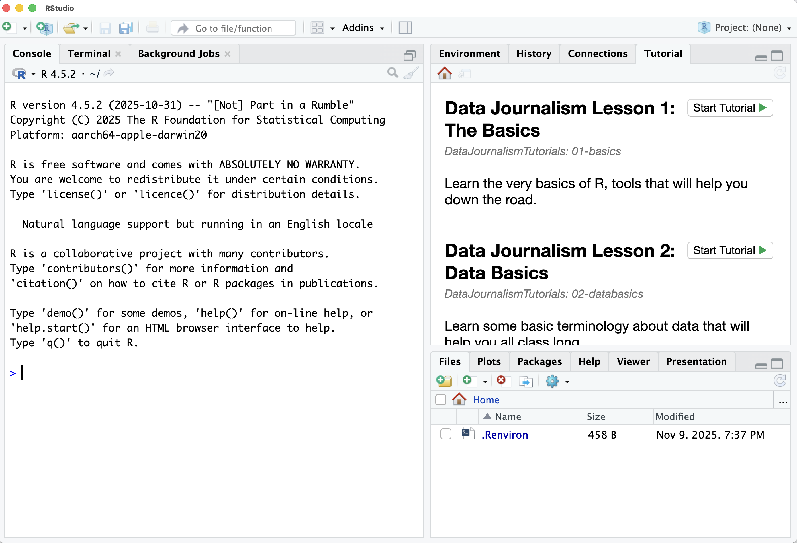

Setting Up Your Newsroom
Before we dive into data analysis and storytelling, we need to set up your toolkit. Follow these steps to get R, RStudio, and the tutorials installed on your computer.
Operating System Updates
Data science libraries evolve rapidly. Ensuring your machine is up-to-date prevents the majority of installation headaches down the road.
- check_circle macOS: Open System Settings > General > Software Update. Make sure you are on a recent version.
- check_circle Windows: Check Windows Update and install all "Quality" and "Critical" updates.
Installing R and RStudio
The Approach
Think of R as the engine and RStudio as the dashboard. You need both, but you'll only ever interact with the dashboard.

Install Order Matters
Install R first, then RStudio. RStudio will automatically detect your R installation.
Mac Users: Apple Silicon vs. Intel
CRAN has separate R installers for Apple Silicon (M1/M2/M3) and Intel Macs. Check your chip under Apple menu > About This Mac and pick the right one.
Windows Users
Install RTools to compile packages from source. Download it from CRAN's Rtools page.
Mac Users: Drag to Applications
When the RStudio installer opens, drag the RStudio icon into the Applications folder — don't run it straight from the disk image.

Installing R Libraries
Packages are the "apps" for R. Run this single command in your RStudio console to install everything the tutorials need — the Tidyverse, visualization helpers, data cleaning tools, and more:
This may take several minutes — that is normal. R is downloading and compiling all the packages at once.
Installing the Tutorials
The tutorials live on GitHub as an R package. Once remotes is installed, run this command to fetch all 28 lessons:
Finding the Tutorials in RStudio
Once installed, look at the top-right pane in RStudio. Click the Tutorial tab to see all 28 lessons listed and ready to launch.
If the Tutorial tab is empty after installation, restart RStudio. The software needs to index the new library files on first launch.

Localization
Every tutorial uses data localized to your state. By default, you get Nebraska data (the tutorials were built there — sorry). Set your own state by editing your R environment file:
Editing .Renviron
The .Renviron file stores environment variables that load every time R starts. Add your state code once and the tutorials will use your state's data permanently.
-
1
Open your environment file
Run this in the R console (you'll need the
usethispackage — install it withinstall.packages("usethis")if needed):usethis::edit_r_environ() -
2
Add your state postal code
Add the following line to the file that opens, replacing
NEwith your two-letter state postal code:tutorial.state = "NE" -
3
Save & Restart
Press Cmd+S (or Ctrl+S) to save the file, then restart RStudio to apply the change. Your tutorials will now load data for your state.
Note: Use the two-letter postal abbreviation for your state (NE, CA, TX, NY, etc.), not the full state name. If you don't set a state, all tutorials will default to Nebraska — that's where the tutorials were built.
Verify it worked
Open the Tutorial tab, find The Basics, and click Start Tutorial. In the section called The Goal, you should see a welcome message that includes your state's name.
"Welcome, student from [Your State] …"
If you see Nebraska instead of your state, something went wrong — go back and try the steps above again. And if Nebraska actually is your state, congratulations: you can do nothing. Welcome, Husker. You're going to love it here.